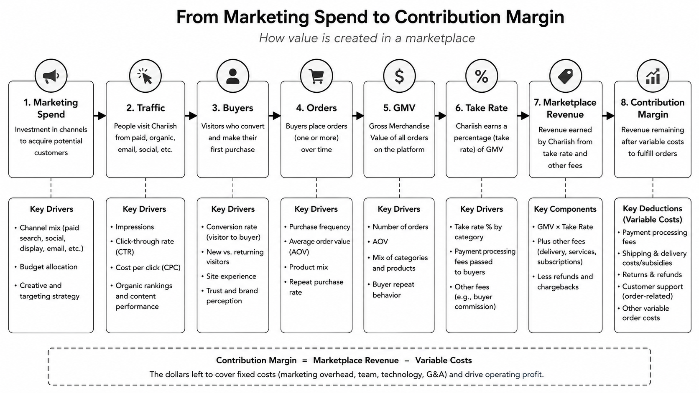

How I rebuilt a marketplace financial model from the bottom up, corrected a revenue recognition issue, and improved forecast accuracy from 75% to 90%.
Chairish was a rapidly growing Series A marketplace for vintage and high-end furniture. As transaction volume, headcount, and operational complexity increased, the financial processes that had worked at an earlier stage were no longer sufficient.
The company had a detailed financial model, but most monthly conversations focused on the income statement, balance sheet, cash flow, and top-line run rate. Those views explained what had happened financially — but not why it had happened, or which operating decisions would influence future performance.
To grow more sophisticated, we needed to connect the financial forecast to the underlying drivers of a consumer marketplace.
Our revenue forecast was primarily based on historical growth rates and high-level assumptions. It was not yet tied to the operating metrics that actually influenced marketplace performance: customer acquisition, conversion, purchase frequency, average order value, and take rate.
This created a gap between the financial model and the way teams operated the business.
Marketing tracked campaign performance. The data team maintained transaction and customer data. Finance reported monthly results. But these functions did not share one consistent view of how marketing activity translated into buyers, orders, GMV, marketplace revenue, and contribution margin.
The model also needed to better account for the economics of an ecommerce marketplace. Payment-processing fees, shipping charges and subsidies, returns, and customer-support costs could materially affect contribution margin even when top-line performance appeared strong.
The problem was not a lack of data. It was that the data, operating assumptions, accounting treatment, and financial forecast were not connected in a way that supported decision-making.
Chairish had strong growth and healthy momentum — which made it especially important to understand what was driving it. Our investors and executive team were beginning to ask more sophisticated questions:
Finance could explain the monthly financial results, but it was harder to confidently explain the operating drivers behind a variance — or quantify the effect of a particular decision. Without greater clarity, the company risked making hiring and spending decisions based on incomplete information, and entering investor conversations without a sufficiently data-backed explanation of its growth model.
I began by working backward from marketplace revenue. Rather than starting with a top-line growth percentage, I asked what had to occur operationally for the company to generate revenue.

That equation was only the starting point. To make the forecast useful, I needed to understand the behaviors beneath each input — customer acquisition by channel, acquisition cost, conversion timing, new versus repeat buyers, purchase frequency, cohort behavior, GMV, take rate, discounts, refunds, and delivery type differences.
I then connected those revenue drivers to the variable costs generated by each transaction: payment-processing fees, shipping subsidies, returns, customer support, and other direct costs. This allowed us to move beyond a simple revenue forecast and begin evaluating contribution margin and customer economics.
The objective was not to include every available metric. It was to identify the small number of drivers that meaningfully explained financial performance and could be influenced by operating teams.
Reconstructing the model from the bottom up caused us to reconsider how the company accounted for shipping. As I traced the economics of an individual order, I discovered an important inconsistency: Chairish was collecting shipping charges from customers and recording the full amount as revenue, even though most of that amount was passed on to third-party shipping providers.
I worked with the accounting team to evaluate the arrangement under the principal-versus-agent guidance in ASC 606 — assessing whether Chairish controlled the shipping service before it was provided to the customer, bore fulfillment risk, and had pricing discretion.
Our analysis indicated that Chairish was primarily arranging for third-party carriers to provide the transportation service. We therefore concluded that Chairish was acting as an agent rather than a principal for the applicable shipping activity.
We changed the accounting methodology from gross to net presentation. The change reduced reported gross revenue — but produced a more accurate view of the company's actual economics, improved comparability across periods, and ensured that revenue growth was not being influenced by changes in pass-through shipping collections.
The discovery reinforced why starting from the income statement was insufficient. Reconstructing the business one transaction at a time surfaced not only better operating metrics, but an accounting treatment that had been obscuring the company's underlying performance.
Once I identified the inputs that should drive the model, I met with the marketing team to align on how each metric was measured. This step revealed that agreeing on the name of a metric was not the same as agreeing on its definition.
We needed alignment on questions such as: Did customer acquisition cost include only media spend or also agency and creative costs? Was a new buyer someone placing a first order or someone creating an account? Which date determined the reporting period — ad click, order placement, or completed transaction?
I documented the agreed definitions and ensured finance and marketing were using the same methodology. This reduced the risk that teams would present different versions of the same KPI in executive or board discussions — and turned the budgeting process into a more useful operating conversation.
I then partnered with the data analytics team to determine whether the required information was available, reliable, and consistently reported. We discovered that we could not yet reliably calculate cohort-based repeat purchase rates or contribution margin by delivery segment.
I coordinated with data and engineering to define the required fields, identify source-system issues, prioritize the work, and establish reporting timelines. My role was not to build the technical pipeline — it was to translate the financial use case into clear data requirements and keep the cross-functional work moving.
Once the initial data pipeline was established, I simplified the financial model from approximately 15 interconnected tabs into five core sections: the three financial statements, marketplace and marketing KPIs, raw and processed data inputs, key operating assumptions, and scenario and forecast outputs.
The purpose of the redesign was not to reduce the number of tabs. It was to make the relationship between assumptions and financial outcomes easier to understand — so leadership could see how changes in acquisition cost, conversion, order frequency, or repeat purchasing affected GMV, revenue, contribution margin, and cash.
I also developed cohort-based repeat-purchase modeling that accounted for the timing of purchases and avoided treating every customer who had not recently purchased as permanently churned.
Finally, we established a weekly working session between finance and marketing, focused on actual performance against budget, acquisition efficiency, changes in conversion and order behavior, and how new information should affect the forecast. This created a recurring feedback loop between operating activity and financial planning.
The remaining variance largely reflected normal volatility in a consumer marketplace rather than a lack of visibility into the business.
More importantly, the company gained a clearer understanding of how marketing investment translated into marketplace activity and revenue. Additional outcomes included:
The model became more than a finance document. It became a shared operating tool that helped the company allocate resources, assess growth initiatives, and prepare for the level of scrutiny expected as it moved toward its next stage of growth.
A startup's financial model becomes more valuable as it becomes more closely connected to the way the business actually operates. At an early stage, historical growth rates and top-line assumptions may be sufficient. As the company grows, leadership needs to understand the mechanisms behind that growth.
Building a sophisticated forecast is a cross-functional exercise. Finance may own the model, but marketing understands acquisition behavior, data teams understand the reliability of the inputs, engineering enables the reporting infrastructure, and operating leaders determine which assumptions can realistically be changed.
The shipping analysis reinforced a related lesson: a financial model should not simply reproduce the company's existing accounting outputs. It should help test whether those outputs accurately reflect the underlying economics of the business.
The most useful model is not necessarily the one with the greatest number of inputs. It is the one that identifies the most important business drivers, makes assumptions visible, improves the integrity of the financial reporting, and helps the company decide where to invest its next dollar.